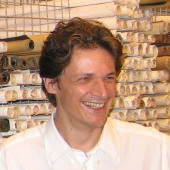
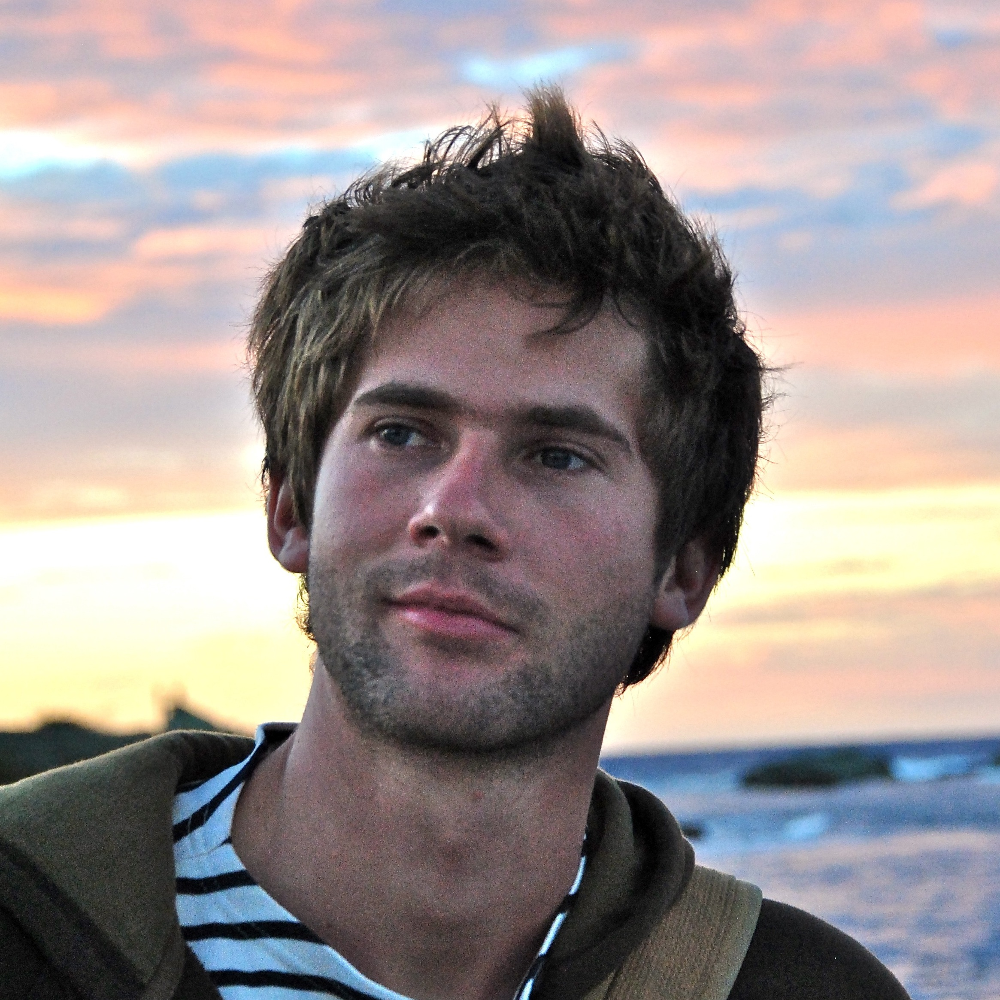
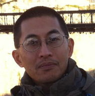
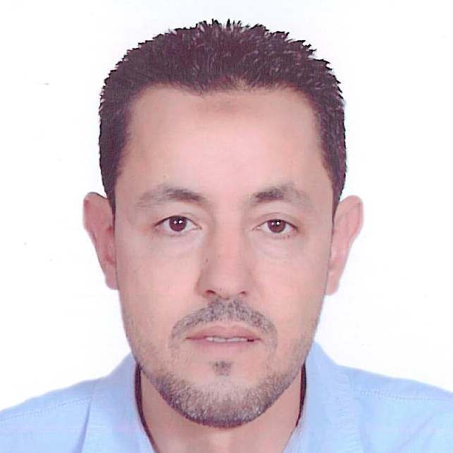
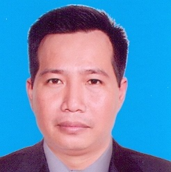
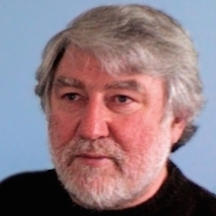
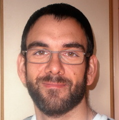
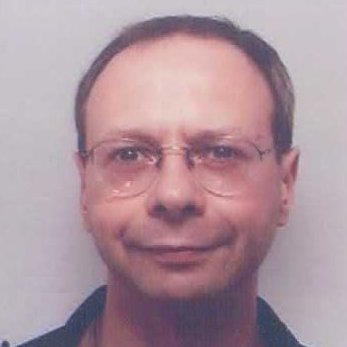
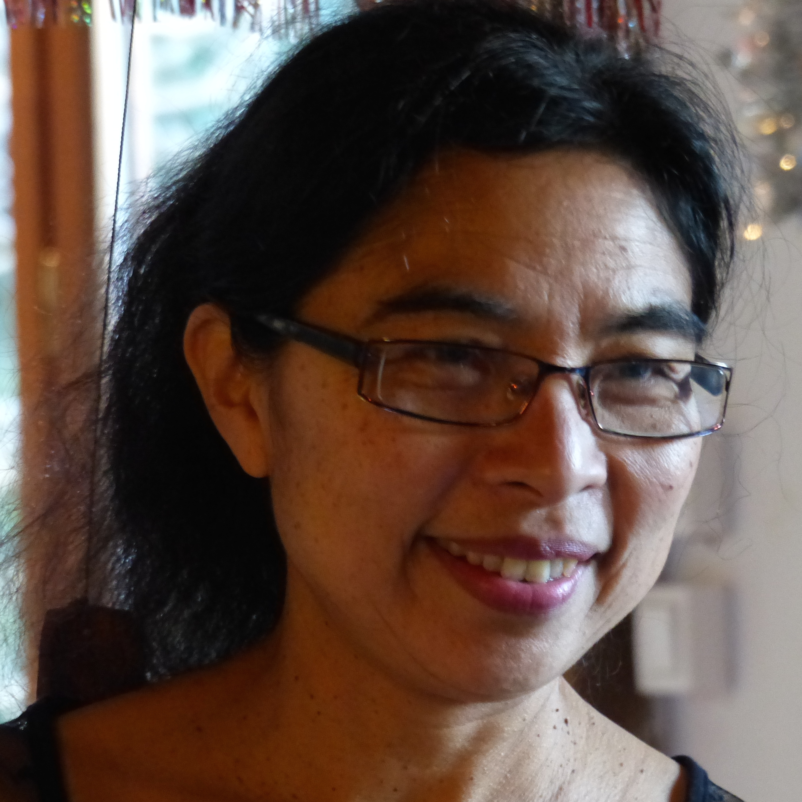
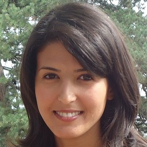

Précédentes éditions : 2010, 2011, 2012 et 2013
Objectifs
Les réseaux de capteurs autonomes sans fils permettent de mesurer et/ou de capturer des données concernant l’environnement immédiat, et potentiellement sur une large échelle. Ces réseaux de capteurs soulèvent un intérêt grandissant de la part des industriels ou d’organisations civiles où la surveillance et la reconnaissance de phénomène physique est une priorité. Citons parmi les applications possibles celles concernant l’environnement (agriculture, eau, forêt, incendies, pollutions, ...) et la ville urbaine, la santé (personnes agées, veille sanitaire dans les troupeaux), la réponse aux catastrophes (tremblements de terre, inondations), la surveillance de processus et/ou de sites industriels et d’ouvrages de génie civil.
Les événements et catastrophes récents montrent que ces réseaux de surveillance peuvent avoir un rôle très important pour la prévention, mais aussi pour l’organisation des secours et le suivi après catastrophe de l’évolution des phénomènes. Dans ces cas, l’interaction entre plusieurs réseaux et/ou technologies de surveillance est également souhaitable : robots, drônes, smartphones, ...
Ces journées thématiques ont pour objectifs :
de permettre la rencontre entre les personnes intéressées par la recherche et l'utilisation des réseaux de capteurs pour des applications de surveillance où les aspects liés à la criticité de l’application finale sont très importants,
de présenter, à travers des exposés tutoriaux et de recherche, l'état de l'art, les applications et les réalisations réelles, ainsi que les différentes thématiques et problématiques scientifiques dans ce domaine.
Les équipes intervenant sur des problématiques industrielles et académiques des aspects critiques des applications de surveillance sont conviées à présenter leur travaux dans ce cadre coopératif.
Lieu
Les journées se dérouleront à l'IRD (Institut de Recherche pour le Développement), centre nord à Bondy du 3 au 4 juin 2014 au sein de l'équipe de recherche UMMISCO.
32 avenue Henri Varagnat. Bondy, France
Pour accéder au campus de l'IRD, le plus simple est de prendre le RER B depuis Paris puis ensuite une navette IRD (seulement le matin jusqu'à 9h35) depuis la station RER de Aulnay sous Bois. Voir horaires de la navette sur le site de l'IRD.
Voir toutes les possibilités d'accès par les transports au campus de l'IRD ou par route sur le site de l'IRD.
La conférence se déroulera dans la salle polyvante du pavillon d'accueil, à droite du batiment principal. Batiment C sur le plan du campus.
Comité d'organisation
Bernard Pottier, LabSTICC, Université de Bretagne Occidentale (UBO), France
Christophe Cambier, UMI UMMISCO, IRD/UPMC, France
Nicolas Marilleau, UMI UMMISCO, IRD/UPMC, France
Congduc Pham, LIUPPA/T2I, Université de Pau et des Pays de l’Adour (UPPA), France
Serge Stinckwich, UMI UMMISCO, IRD/UPMC, France
Conférenciers
Le programme des journées RESSACS 2014 est en cours de constitution. Si vous souhaitez présenter vos travaux concernant la surveillance environnementale, merci de prendre contact avec Serge DOT Stinckwich AT ird DOT fr.
-

3 Juin, 14h30-15h15 Le SI WEBOBS: un ensemble d’outils intégrés de gestion pour les observatoires telluriques
François Beauducel Page web
François Beauducel est ingénieur des Arts et Métiers, docteur en géophysique et aujourd'hui professeur à l'Institut de Physique du Globe de Paris. Spécialiste de la déformation des volcans actifs en instrumentation et modélisation numérique (Indonésie, Antilles, Réunion, Italie), il a été 7 ans directeur de l'Observatoire volcanologique et sismologique de Guadeloupe.
-

3 Juin, 15h15-16h00 High resolution U.A.V. thermal imagery for the study of pest dynamics in the tropical Andes
Emile Faye Page web
Emile Faye est doctorant en agro-écologie thermique au laboratoire Biodiversité et évolution des complexes plantes-insectes ravageurs-antagonistes de l’Institut de Recherche pour le Développement (IRD). Ses travaux de thèse s’articulent autour de la relation entre les paysages thermiques et la dynamique de ravageurs des cultures dans les Andes tropicales. Il étudie les microclimats rencontrés par les ravageurs des cultures au moyen de caméras infrarouges et visuelles embarquées sur un hexaptère et de micro-capteurs au sol.
-

3 Juin, 16h00-16h45 Réseaux de capteurs pour la surveillance, d'une démarche adhoc vers une approche standardisée
Congduc Pham Page web
Congduc Pham est professeur d’informatique à l’Université de Pau et Pays de l’Adour. Ses domaines de recherche sont les réseaux de communication et la qualité de service. Depuis plusieurs années, il s’intéresse aux réseaux de capteurs sans-fils et aux applications critiques de surveillance.
-

3 Juin, 16h45-17h00 Une approche capteurs pour le contrôle et l'optimisation du trafic urbain
Mohamed Babram
Titulaire d’un Diplôme des Etudes Supérieures (DES) en 1996 et une Thèse d’Etat en 2007, en Mathématiques Appliquées, Mohamed Ait Babram exerce en tant que Professeur de l’Enseignement Supérieur au département de mathématiques à la Faculté des Sciences et Techniques de Marrakech depuis 1997. Il est membre du Laboratoire des Mathématiques et Dynamique de Population de l’Université Cadi Ayyad (LMDP) et l’Unité de Modélisation Mathématique et Informatique de Systèmes Complexes (UMMISCO) qui est placée sous la double tutelle IRD-UPMC. Son expérience dans la modélisation mathématique et les outils d’analyse de données et Data mining, l’a amené vers des problématiques liées à la mobilité urbaine et la modélisation multi agents.
-
4 Juin, 9h00-9h45 Risque et réseaux de capteurs: potentiel d’application de la méthodologie d’Analyse Globale des Risques
Florent Arrignon Web site
MAD-Environnement is a young innovative company based in Southern France. Its activities encompass data mining, modelling and risk analysis. MAD-Environnement brings innovative and controlled solutions to many segments and activities, such as environmental and health services, food processing, or shipbuilding industries. MAD-Environnement provides its skills via three operation modes: i) Mathematical and Risk expertise and training, ii) Model building and iii) Software development.
-

4 Juin, 10h00-10h45 Mekong Delta: measuring and managing risks, a case for wireless sensor networks
Hiep Xuan Huynh
Huỳnh Xuân Hiệp is currently associate professor in the Department of Software Engineering, College of Information and Communication Technology, Can Tho University. He received the engineer, master and Ph.D. degrees in computer science from Can Tho University (CTU), l’Institut de la Francophonie pour l’Informatique (IFI) and Polytechnics School of Nantes University (Polytech’Nantes) in 1996, 1998 and 2006 respectively. His research interests includes knowledge discovery from databases, machine learning, simulation, modeling decisions, bioinformatics, embedded systems and wireless sensor network. He is also the head of the DREAM (Decision-support Research for Environmental Applications and Models) multidisciplinary research team associated with l’Institut de Recherche pour le Développement (IRD).
-

4 Juin, 11h30-12h45 Global warming, global sharing, a case for micro satellites and sensor networks
Bernard Pottier Page web
Bernard Pottier a travaillé à la réalisation d'outils de conception d'architectures de traitement de 1990 à 2007, dans le cadre de plusieurs projets nationaux et internationaux. Depuis 2008, ses recherches sont tournées vers les réseaux de capteurs sans fil et les méthodes de conception d'applications sociétales et environnementales.
-

4 Juin, 14h00-14h45 Réseau de capteurs sans fil pour la surveillance de machines industrielles
Sébastien Chipeaux
J'ai soutenu mon doctorat d'Informatique le 17 Décembre 2013. Mon sujet de thèse était la Génération automatique de systèmes multi-agents à partir de modèle pour la simulation de systèmes complexes géographiques à entités mobiles. Les travaux menés au cours de ce doctorat fournissent un méta-modèle graphique et outil de modélisation adaptés à la création de modèles agents qui représentent la dimension géographique et entités mobiles qui composent les systèmes étudiés : par exemple une ville. La simulation générée automatiquement à partir de ce modèle permet à des scientifiques non-informaticiens d'appréhender l'impact de différents scenarii sur le comportement des entités qui peuplent le système : les habitants de la ville par exemple. J'effectue actuellement un post-doctorat dans le cadre d'un projet européen sur la surveillance de machines industrielles à l'aide de réseaux de capteurs pour la maintenance prédictive.
-

4 Juin, 15h45-16h30 A Model of Computation for highly parallel and dynamic system
Stéphane Louise
Stéphane Louise is working as Research Engineer at CEA-LIST. His current focus is on harvesting the processing power of the emergent embedded manycore platforms through several aspects, and 3 main topics: 1) Programming Languages and compilation, 2) Execution support and execution scheme, and 3) Execution time and architectural constraints. He worked on the MPPA chip architecture and its programming model incollaboration with Kalray, and on the safety critical real-time programming tools OASIS with AREVA-NP. He obtained his PhD from U-Psud in 2002 and is now finalizing his HDR.
-

4 Juin, 16h30-17h15 Réseaux de capteurs pour la surveillance des inondations à Jakarta
Onil Goubier
Diplômée de l'ITB Indonésie et de l'université de Rennes I, Onil a travaillé dans les systèmes parallèles, distribués et temps réel, dans l'industrie et en académique. Elle s'intéresse actuellement aux réseaux des capteurs pour des applications de prévention des catastrophes naturelles, et sur des aspects de diffusion sociétale de capteurs.
-

4 Juin, 17h15-18h00 Random forests for diagnostics based on data provided by wireless sensor networks
Wiem ELGHAZEL
Wiem Elghazel received her Bachelor degree in computer science from University of science in Tunisia in 2010, and her Masters degree in A.I. and decision making support from INSA Lyon in 2012. Her research work included efficient packets transfer and energy consumption in wireless sensor networks. Currently, she is a PhD student at femto-st laboratory, AS2M department (Automatique et Systèmes Micro-Mécatroniques) in Besançon. She studies the dependability of wireless sensor networks to provide accurate data as a solid ground for reliable remaining useful life estimates in industrial prognostics and health management.
Programme
Le programme des journées RESSACS 2014 est en cours de constitution. Si vous souhaitez présenter vos travaux concernant la surveillance environnementale, merci de prendre contact avec Serge DOT Stinckwich AT ird DOT fr.
| Time | Slot | Description |
|---|---|---|
| 3 Juin, 13h45-14h30 | Accueil - Café | - |
| 3 Juin, 14h30-15h15 | Le SI WEBOBS: un ensemble d’outils intégrés de gestion pour les observatoires telluriques Institut de physique du globe de Paris | Les observatoires volcanologiques et sismologiques doivent assurer une double mission de collecte de données pluridisciplinaires à des fins de recherche et une mission de surveillance temps-réel et d'alerte aux autorités. Ces objectifs entrainent la gestion de réseaux de capteurs très variés associés à des données extrêmement hétérogènes (paramètres physico-chimique, échantillonnages manuel/automatique, fréquence et formats d'acquisition, métadonnées ...). Le système WEBOBS, développé depuis 2001 et implanté dans plusieurs observatoires opérationnels, apporte une solution intégrée et effective à ces problématiques. |
| 3 Juin, 15h15-16h00 | High resolution U.A.V. thermal imagery for the study of pest dynamics in the tropical Andes Biodiversité et évolution des complexes plantes-insectes ravageurs-antagonistes, IRD | Les drones sont de nouveaux outils très prometteurs pour la recherche. Equipés de tous types de capteurs, volant bas et lentement, ils permettent l’acquisition rapide, bon marché et répétable de données spatialisées à très hautes résolutions. Cette présentation exposera les travaux effectués dans les Andes équatoriennes pour la caractérisation des patrons spatio-temporels d'hétérogénéité thermique des agrosystèmes à l’échelle de l’insecte ravageur. L’utilisation de caméra thermique embarquée sur un drone combinée à de nombreux capteurs au sol a permis l’obtention d’orthophotos visuelles et infrarouges de hautes résolutions (1,3 cm/px et 5 cm/px respectivement) et la modélisation du microclimat des agrosystèmes (air, plante et sol). Ces données analysées dans des SIG mettent en évidence l’effet significatif du microclimat sur la présence et distribution des insectes ravageurs dans les agro-systèmes andins. |
| 3 Juin, 16h00-16h45 | Réseaux de capteurs pour la surveillance, d'une démarche adhoc vers une approche standardisée Université de Pau | Les réseaux de capteurs sont des technologies très prometteuses pour un grand nombre d'applications à fort impact sociétal et environnemental. De nombreuses infrastructures expérimentales ont été mises en place, souvent de manière adhoc en développant les outils, les protocoles et les environnements logiciels adéquats. Depuis quelques années, nous assistons à l'émergence d'un besoin générique d'adresser et de gérer un grand nombre d'objets communicants (dont les réseaux de capteurs) pour collecter et traiter de grandes masses/flux de données. Dans cette présentation, nous montrerons comment passer d'une gestion adhoc vers une gestion plus générique et standardisé de telles infrastructures pour permettre un connectivité de bout-en-bout avec le réseau Internet et bénéficier de toute la puissance de traitement des nouvelles infrastructures de type cloud. |
| 3 Juin, 16h45-17h00 | Une approche capteurs pour le contrôle et l'optimisation du trafic urbain Université Cadi Ayyad, Maroc | Dans cette intervention, nous nous intéresserons au problème lié au contrôle et optimisation du trafic urbain dans la ville de Marrakech. Notre approche est principalement basée sur la modélisation multi agents comme outil de simulation de la mobilité dans le réseau routier de la ville et les capteurs comme instrument de collecte de données liées à l'environnement du trafic, notamment les flux et les émissions de gaz à effet de serre. Les cas d'études que nous convoiterons exploré sont particulièrement la conception d'un système adaptatif des feux signalétiques en vue d'une optimisation de la circulation au niveau des carrefours et l'optimisation des programmes des transports en commun en vue d'une réduction des émissions de dioxyde da carbone. Les algorithmes d'apprentissage statistiques et automatiques, notamment les réseaux de neurones et le Q-Learning, seront d'une utilité majeure dans l'obtention des états d’équilibre optimal. |
| 3 Juin, 17h00-19h00 | Réunion du groupe CAPFLEXITE (Capteurs et Systèmes Complexes) | - |
| 3 Juin, 19h00-21h00 | BBQ & Initiation au pilotage de drone | - |
| 4 Juin, 9h00-9h45 | Risque et réseaux de capteurs: potentiel d’application de la méthodologie d’Analyse Globale des Risques MAD-Environnement | Les réseaux de capteurs sont des systèmes complexes de par la structure des éléments les constituant, leur architecture de déploiement et leur généricité d’applications. Du fait de cette complexité, un réseau de capteurs est exposé à de nombreux risques de différentes natures (techniques, environnementaux, humains, économiques …) et à différents stades de vie du réseau (conception, déploiement, fonctionnement, démantèlement, …). Pour obtenir une vision globale des risques auxquels est exposé ce système, il est important d’éviter de les traiter par des disciplines cloisonnées et des outils trop spécifiques. L’Analyse Globale des Risques est une méthode qui permet de répondre à cette contrainte, conformément à la norme ISO 31000 de management des risques. Le potentiel d’application de cette méthode aux réseaux de capteurs est présenté par le biais d’illustrations issues d’applications sur d’autres systèmes complexes et par la spécification des besoins pour documenter une telle analyse. |
| Mercredi 4 Juin, 9h45-10h | Coffee Break | - |
| 4 Juin, 10h00-10h45 | Mekong Delta: measuring and managing risks, a case for wireless sensor networks Can Tho University, Vietnam | |
| Mercredi 4 Juin, 10h45-11h30 | Session Démonstration - EAR-IT: streaming audio pour la surveillance acoustique dans les smart cities - Cong Duc Pham (LIUPPA) | - |
| 4 Juin, 11h30-12h45 | Global warming, global sharing, a case for micro satellites and sensor networks Université de Bretagne Occidentale, Lab-STICC | Les capacités des capteurs et des communications sans fil permettent de construire des systèmes de perception physique des évolutions de l'environnement. La réalisation de systèmes de collectes aériens ou satellitaires peut désormais permettre la récupération et la diffusion ouverte de ces informations, parfois lointaines et inaccessibles, à l'image d'un internet 'spatial'. Nous présentons ce contexte, et les techniques de simulation proposées pour un projet <<MIcro-satellite et réseaux de CApteurs>>. |
| 4 Juin, 12h45-14h00 | Repas | - |
| 4 Juin, 14h00-14h45 | Réseau de capteurs sans fil pour la surveillance de machines industrielles DISC/FEMTO-ST | La thématique réseaux de capteurs est étudiée depuis 10 ans au sein de l'équipe CARTOON du Département d'Informatique des Systèmes Complexes (DISC) du laboratoire FEMTO-ST à l'Université de Franche-Comté. Dans ce cadre nous participons au projet européen MainPreSI dans le cadre de l'INTERREG IV. Nous souhaitons utiliser une technologie innovante basée sur un ensemble capteurs passifs sans fil + interrogateur disant qui alimente, communique et interroge les capteurs disposés sur la machine à surveiller grâce à la technologie RADAR. Plusieurs verrous doivent être levés comme, par exemple, la validité des données reçues par l'interrogateur, la communication entre interrogateur ou encore le traitement des données. |
| 4 Juin, 14h45-15h00 | Coffee Break | - |
| 4 Juin, 15h00-15h45 | Session Démonstration - QuickMap, un logiciel interactif pour afficher et saisir des informations géographiques, sur fond de cartes géoréférencées (OpenStreetMap, GoogleMap) - Pierre-Yves Lucas (UBO) | - |
| 4 Juin, 15h45-16h30 | A Model of Computation for highly parallel and dynamic system CEA-LIST | Todays challenges in real-time systems including sensor networks is that they have massive scale with high parallelism level, and at the same time they can be highly dynamic, with parts that are intermittently connected to a core system. For fixed (non dynamic) systems, dataflow paradigms works reasonably well, especially for signal processing. But with parts of the system that connect and disconnect in a unpredictable fashion, the usual dataflow models does not work. We want to show how to improve a deterministic dataflow model (mostly CSDF) with data management which retains the deterministic properties of the base modelbut without the constraints of a static (non dynamic) system. |
| 4 Juin, 16h30-17h15 | Réseaux de capteurs pour la surveillance des inondations à Jakarta Association Takanea / DRR Indonesia Foundation | Jakarta est une ville très affectée par des inondations récurrentes, aggravées par les changements climatiques. Les réseaux de capteurs sont une solution prometteuse pour surveiller, alerter, collecter des données et étudier des inondations. Nous présenterons la problématique de Jakarta, l'infrastructure en place et les efforts en réseaux de capteurs. |
| 4 Juin, 17h15-18h00 | Random forests for diagnostics based on data provided by wireless sensor networks Université de Franche-Comté / FEMTO-ST | With the growing complexity of engineering assets, maintenance activities have become a necessity in industry. In fact, sudden system failures and shutdowns may induce downtime costs and the loss of customer trust, not to mention possible catastrophic outcomes. In this presentation, random forests are proposed for operating devices diagnostics in presence of a variable number of features. In various contexts, the use of wireless sensor networks for monitoring purposes is inevitable. Unfortunately, this kind of networks is subjected to flaws. Furthermore, the networks' topology often varies, leading to a variability of quality of coverage in the area. Diagnostics at the sink level must take into consideration the fact that both the number and the quality of provided features are not constant, and that some politics like scheduling or data aggregation may be developed across the network. The aim of this presentation is (1) to show that random forests are relevant in this context, due to their flexibility and robustness, and (2) to provide first examples of use of this method in data- oriented diagnostics. |